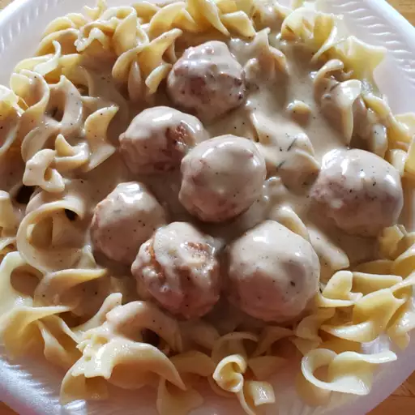

Swedish-Meatballs

Description
A rich and creamy Swedish meatball sauce makes a comforting meal when served over pre-cooked meatballs.
This quick and easy recipe makes a generous amount of sauce for 10 ounces of frozen meatballs. Serve over egg noodles or rice.
Ingredients
- Beef Stock
- Heavy Cream
- Flour
- Soy Sauce
- Spices
- Meatballs
Directions
-
Whisk together stock, cream, flour, soy sauce, 1/2 teaspoon pepper, and 1/2 teaspoon rosemary in a large saucepan over low heat until smooth.
Cook, stirring occasionally, until thickened, about 10 minutes.
-
Stir in thawed meatballs, and continue cooking until meatballs are heated through, about 5 more minutes. An instant-read thermometer inserted into
the center of the meatballs should read at least 160 degrees F (71 degrees C).
-
Taste and adjust seasonings before serving.